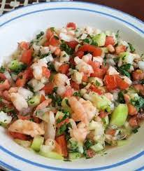

Ceviche de Camarón
Ingredientes
- 4 tazas de camarón pacotilla
- 1 taza de cebolla morada
- 1 taza de jitomate
- 1 taza de jícama
- 1 taza de pepino
- 1 taza de sandía, cortada en cubitos
- 1/2 tazas de jugo de limón
- 2 cucharadas de chile habanero, asado y finamente picado
- 3 cucharadas de cilantro, finamente picado
Preparación
Paso 1: En una tabla corta la sandía a la mitad y con ayuda de una cuchara, ahueca hasta retirar la pulpa. Reserva.
Paso 2: Sobre una tabla corta la cebolla, el jitomate, la jícama, y el pepino.
Paso 3: En un bowl mezcla los camarones con la cebolla morada, el jitomate, la jícama, el pepino, el jugo de limón, el chile habanero hasta incorporar.
Paso 4: Sirve y acompaña con tostadas.